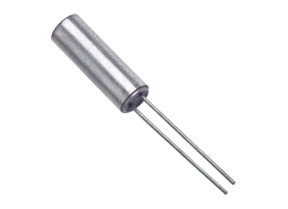
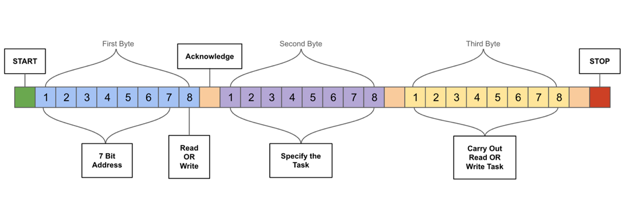
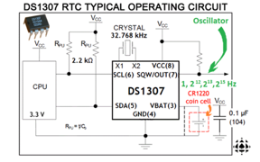
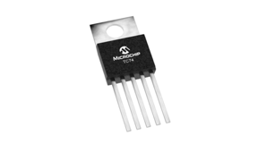
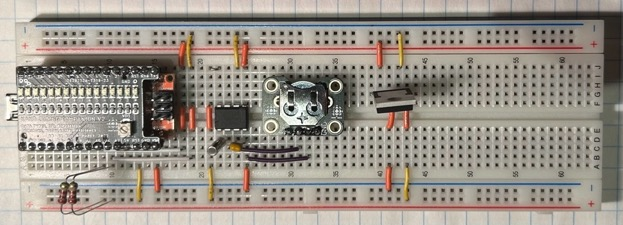
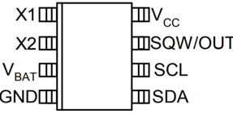

2024 · I2C + Real-Time Clock
Tiny Clock
Built an I2C scanner and RTC test platform using an Arduino Nano, DS1307 real-time clock, TC74 temperature sensor, and crystal time base.

Video Demonstration
Working demonstration
The project video shows the physical build, behaviour, and final result.
 ▶ Watch on YouTube
▶ Watch on YouTube
Project Overview
Use I2C to identify and communicate with timekeeping hardware.
The project focused on understanding the I2C bus: scanning addresses, detecting connected devices, and preparing the RTC system used in the next clock prototype.
What I built
- I2C bus scanner firmware
- DS1307 RTC breakout integration
- TC74 temperature sensor detection
- Serial monitor output for device addresses
Technical Skills
Skills demonstrated
I2C communication
Applied directly in the design, build, debugging, or final integration of the project.
Address scanning
Applied directly in the design, build, debugging, or final integration of the project.
RTC hardware
Applied directly in the design, build, debugging, or final integration of the project.
Serial debugging
Applied directly in the design, build, debugging, or final integration of the project.
Embedded C++
Applied directly in the design, build, debugging, or final integration of the project.
Build Story
I2C timekeeping components and prototype
RTC pinout
The image to the right shows the I2C transaction graphic, where the bus sends a start bit, address, acknowledge bits, data bytes, and a stop bit.

I2C communication
The image to the right shows the DS1307 RTC operating circuit, including the crystal, backup battery, pull-up resistors, and I2C data/clock lines.

Crystal time base
The image to the right shows the TC74 temperature sensor, a second I2C-compatible device detected by the bus scanner.

I2C sensor device
The image to the right shows the Tiny Clock breadboard prototype, where the Arduino Nano scans the I2C bus and detects the RTC and temperature sensor.

RTC wiring setup
The image to the right shows the DS1307 RTC pinout, including the crystal pins, backup battery input, square-wave output, and I2C connections.
